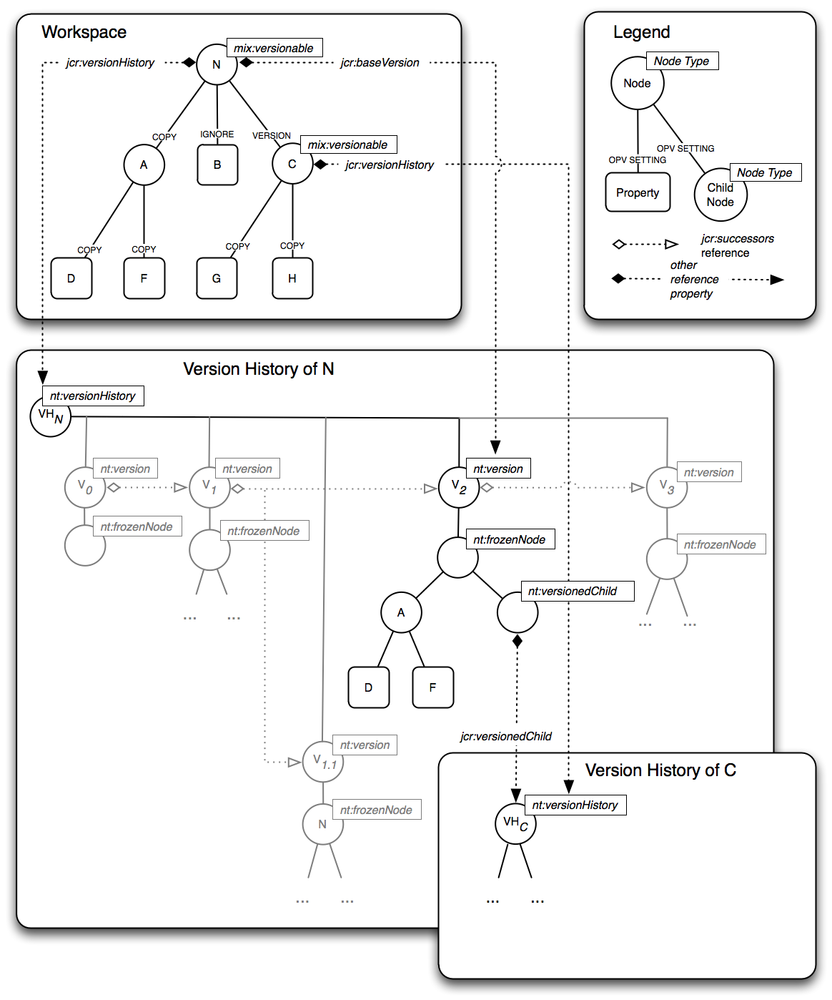

3.13.10 FullVersioning Diagram

The above diagram
depicts the main elements of the full versioning model. A workspace
contains a versionable node N
with child nodes A
and C
and property B.
The on-parent-version settings of each child are shown. A
has an OPV of COPY
while B
has an OPV of IGNORE.
C
is itself versionable and has an OPV of VERSION.
VHN
is the nt:versionHistory
node holding the version history of N
which, in the situation depicted, consists of the versions V0,
V1,
V1.1,
V2
and V3,
where V0
is the root version, V1
is the successor of V0,
V1.1
and V2
are both successors of V1
(constituting a branch) and V3
is the successor of V2.
V
2
is the current base version of N
and is shown in detail. As defined by the OPV values of the children
of N,
V2
contains a partial copy of N's
subtree in its frozen node. This partial copy consists of the
subtree rooted at A
(since A
in N
has an OPV of COPY)
but does not include the property B
(since B
in N
has an OPV of IGNORE).
Since C
is itself versionable it has its own, separate, version history at
VHC
and since it has an OPV of VERSION,
C
is represented in the frozen subtree of V2
by an nt:versionedChild
node that points to VHC.